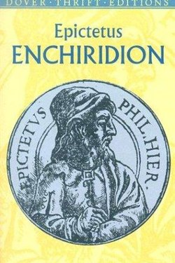

Library › Self-Improvement
The Enchiridion — Summary & Key Lessons

The Stoic handbook — Epictetus' 53 rules for a life undisturbed by what you cannot control.
📖 OPEN THE FULL INTERACTIVE BREAKDOWN →🌐 Read it in Hindi, Hinglish, Gujarati, Tamil & 22 more languages — free, with audio.
💡 The Big Idea
A slave who became one of history's great teachers, Epictetus compressed Stoicism into a pocket manual. His core division: the world splits into things under our control (judgements, desires, actions) and things not (body, wealth, reputation, outcomes). All disturbance comes from caring about the second list. The Enchiridion is the practical application: desire less, judge carefully, and meet every event as a philosopher, not a victim.
🧠 The 7 Key Lessons
Lesson 1: The Control Test
Chapter 1: The Division
The entire system rests on one question: is this under my control? If yes — work on it. If no — it is not yours to fret over. Epictetus runs everything through this filter: reputation, health, weather, other people's opinions, outcomes of your own best efforts. The test does not make you passive; it redirects your energy from the impossible to the possible.
📖 Example: You cannot control the interview result — but you can control tonight's preparation. The wise prepare, then release. Read the full example →
⚡ Do this: For one worry, split the page into two columns: what I control / what I do not. Act on the first, drop the second.
Lesson 2: It Is the Judgement, Not the Event
Chapter 2: The Source
The most important sentence in Stoicism: people are not disturbed by things but by their opinions about things. Death, loss and insult are events; the suffering is the added story. Change the interpretation and the event loses its sting. This is not denial — it is refusing the second arrow of self-inflicted pain.
📖 Example: The same rejection is a catastrophe to one person and a redirect to another — the event did not change. Read the full example →
⚡ Do this: When you feel upset, name the interpretation and ask: is this the event, or my story about it?
Lesson 3: Appearances: Pause Before You Judge
Chapter 3: The Discipline of Assent
Epictetus' drill: when an impression arrives — an insult, a fear, a desire — do not sign it immediately. Delay assent; the impression is not yet a fact. His instruction for provocation: say nothing, then answer tomorrow. The pause is the whole discipline: between stimulus and reaction, the philosopher inserts a question.
📖 Example: A rude message read at night produces a war; read in the morning with a pause, it produces a one-line reply. Read the full example →
⚡ Do this: For one week, run the 24-hour rule on every emotionally charged reply.
Lesson 4: Play Your Role Well, Not Loudly
Chapter 4: The Player
Life is a play, and you are assigned a role — not by choice, but by circumstance. The Stoic virtue is not to choose the role but to perform it excellently: short or long, king or beggar. The dignity is in the acting, not the casting. This is the source of the modern 'do your job well' ethos: the work is the offer.
📖 Example: The colleague who resents their job plays badly; the one who plays their part fully finds the growth in it. Read the full example →
⚡ Do this: Name the role you are avoiding, then commit to playing it well for one week.
Lesson 5: The Long View: Everything Is Lent
Chapter 5: Impermanence
Epictetus repeats one practice: remind yourself that everything you love is borrowed — the child, the friend, the house, the body. Not to become cold, but to love without clutching. The person who knows the loan can be recalled lives each day with the gratitude and freedom of someone who never assumed tomorrow.
📖 Example: A parent who knows childhood is short enjoys the bath-time chaos instead of resenting it. Read the full example →
⚡ Do this: Tonight, look at one person or thing you hold dear and silently remember: on loan. Then be present.
Lesson 6: The Discipline of Assent: Impressions Come First
Enchiridion 1, 5, 20
Epictetus' framework: impressions arrive unbidden — the insult, the fear, the appetite — and your power lies in the moment before you assent to them. You cannot stop the thought, but you can refuse to endorse it: 'so it appears' is not the same as 'so it is.' Practised daily, this single pause turns a slave's life into a free one.
📖 Example: The rude remark lands; the impression says 'I have been wounded.' The wound requires your signature — refuse the signature and nothing happened. Read the full example →
⚡ Do this: When a negative impression arrives, add silently: 'so it appears — not what is.' Then act on what is.
Lesson 7: The Role, The Play, The Exit
Enchiridion 17, 24, 26
Life, says Epictetus, is a play whose script you did not write: you are assigned a role — emperor or slave, rich or poor — and your only freedom is how well you play it. Play your part with all your heart; and remember the director may call the scene at any hour, so the wise actor plays each scene as if it were the last.
📖 Example: The emperor and the slave play different roles but share the same hour and are judged by the same standard: did they play their part well? Read the full example →
⚡ Do this: Name the role you are playing today, play it fully — and practise releasing it this evening as if the scene had ended.
✅ 5-Step Action Plan
- Split every worry into control / no-control columns.
- Name the interpretation when upset; refuse the second arrow.
- Use the 24-hour pause on charged replies.
- Play your current role excellently for one week.
- Practise the loan reminder on what you love.
⚠️ When This Doesn't Work
The Enchiridion is austere and can shade into fatalism or emotional numbness; used wrongly, 'control only what is yours' becomes an excuse for inaction. The discipline is renunciation of the uncontrollable, never of responsibility.
💀 The Graveyard Proves It
📷 The Maginot Line — The Perfect Defense Against the Previous War. Burn: France, in six weeks Read the full case study →
💬 Best Quotes from The Enchiridion
- “Some things are in our control and others are not.”
- “It is not things that disturb us, but our judgements about things.”
- “Seek not that the things which happen should happen as you wish; but wish the things which happen to be as they are, and you will have a tranquil flow of life.”
Interactive version: mark lessons as read, listen in your language, share quote cards.